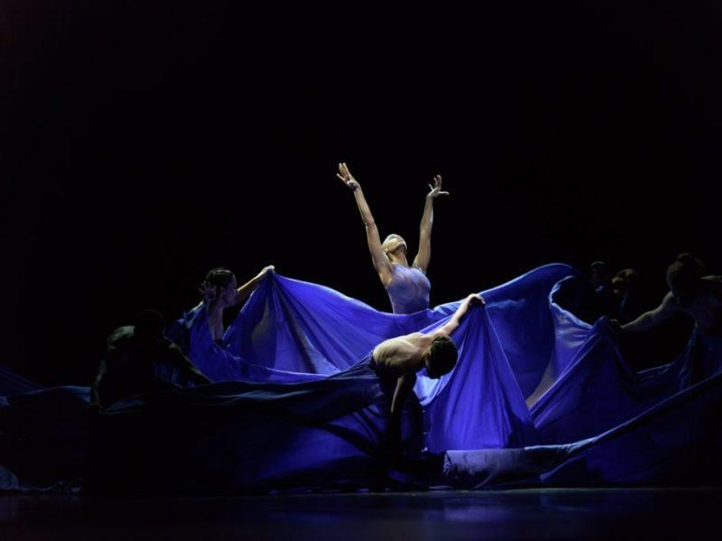

Unsound
Se parte de un estudio filosófico de las acciones/emociones llevadas a cabo a diario como su motivación crucial.

También puedes seguirnos en
Se parte de un estudio filosófico de las acciones/emociones llevadas a cabo a diario como su motivación crucial.
La dinámica como punto de partida de un submundo anclado en la métrica de la sonoridad del movimiento.